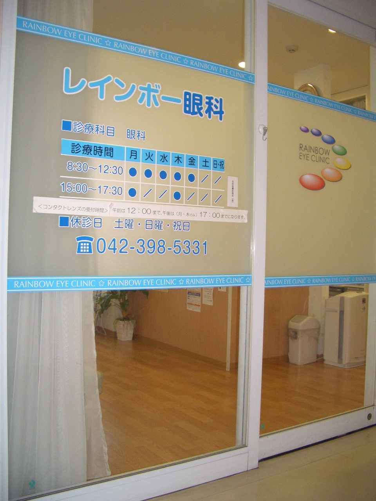

医療DX推進のための取り組み
◎医師等が診療を実施する診察室などにおいて、オンライン資格確認等システムにより取得した診療情報等を活用して診療を実施しています。
◎マイナ保険証を促進するなど、医療DXを通じて質の高い医療を提供できるよう取り組んでいます。
◎電子カルテ情報共有サービスの導入検討などを含め、医療DXにかかる取り組みを実施しています。
◎当院はオンライン資格確認を行う体制を有しています。
受診された患者様に対し、受診歴、薬剤情報、特定健診情報、その他必要な診療情報を取得活用して診療を行っております。
◎マイナ保険証を促進するなど、医療DXを通じて質の高い医療を提供できるよう取り組んでいます。
◎電子カルテ情報共有サービスの導入検討などを含め、医療DXにかかる取り組みを実施しています。
◎当院はオンライン資格確認を行う体制を有しています。
受診された患者様に対し、受診歴、薬剤情報、特定健診情報、その他必要な診療情報を取得活用して診療を行っております。
診療内容
☆結膜炎、角膜炎、ものもらい、白内障、緑内障、ドライアイなどの一般眼科
☆ブドウ膜炎、糖尿病網膜症、網膜剥離、黄斑変性などの眼底疾患
☆糖尿病網膜症、眼底出血、網膜裂孔などに対するレーザー治療
☆眼鏡・コンタクトレンズ処方箋発行（販売は行ってません）・定期検査
☆ブドウ膜炎、糖尿病網膜症、網膜剥離、黄斑変性などの眼底疾患
☆糖尿病網膜症、眼底出血、網膜裂孔などに対するレーザー治療
☆眼鏡・コンタクトレンズ処方箋発行（販売は行ってません）・定期検査
受付終了時間について
☆一般受付は診療終了時間10分前、午前は12時20分まで、午後(月・木)は5時20分までとなります。
☆月・木曜午前は受付終了時間が早まることがあります。
☆コンタクトレンズ検査についてはコンタクトレンズのページをご覧ください。
☆精密眼底検査(散瞳剤使用)をご希望の方は午前は10時30分、午後は4時30分までにご来院ください。お時間がかかること、検査後もしばらくぼやけることをご了承願います。自らの運転(自動車、バイク、自転車など)でのご来院はご遠慮ください。
☆月・木曜午前は受付終了時間が早まることがあります。
☆コンタクトレンズ検査についてはコンタクトレンズのページをご覧ください。
☆精密眼底検査(散瞳剤使用)をご希望の方は午前は10時30分、午後は4時30分までにご来院ください。お時間がかかること、検査後もしばらくぼやけることをご了承願います。自らの運転(自動車、バイク、自転車など)でのご来院はご遠慮ください。

診療時間変更のお知らせ
○ 月曜日と木曜日は午前外来の受付終了時間が当日の状況で早まることがあります。ご了承ください。
○ コンタクトレンズ検査受付時間変更についてはコンタクトレンズのページをご覧ください。
以下の日程は医師会会務出席のため、検査の制限をさせていただきます。また受付終了時間が早まることがあります。
6月23日(月)午後(コンタクトレンズ・精密眼底検査受付なし)
○ コンタクトレンズ検査受付時間変更についてはコンタクトレンズのページをご覧ください。
以下の日程は医師会会務出席のため、検査の制限をさせていただきます。また受付終了時間が早まることがあります。
6月23日(月)午後(コンタクトレンズ・精密眼底検査受付なし)
臨時休診日のお知らせ
8/11(火・祝)〜8/18(火) 夏期休暇
8/31(月) 休診
10/29(木)〜10/30(金) 休診
8/31(月) 休診
10/29(木)〜10/30(金) 休診